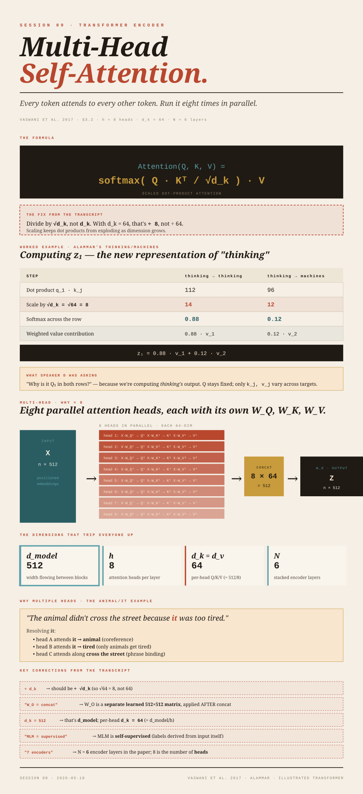

Multi-Head
Self-Attention.
Every token looks at every other token, with learned weights. Run the whole thing eight times in parallel. Concatenate. Project. That's attention.
The lecturer said multiple times to "divide by d_k". The paper divides by √d_k (square root). With
d_k = 64, that's dividing by 8, not by 64. The scaling exists so the dot products don't blow up as the dimension grows, and √d_k is the right scale for the variance of a dot product over d_k random dimensions. (Vaswani et al. 2017, §3.2.1.) Everything else this session — the lecturer's 112 → 14 example, the 96 → 12 example — is consistent with the √d_k scaling; the formula description just got dropped in transit.
What attention is for
The encoder's job is to turn each input token into a vector that captures not just what the token is, but also how it relates to every other token in the input. Position encoding (Session 8) told the model where each token sits. Attention tells it what each token means in context.
The example from Session 7 is the easy one to hold onto:
"Ram is going to school. He is a good boy." — the model needs to know that he refers to Ram, not to school. Attention is the mechanism that lets the encoder bake that relationship into the vector for he.
The shape of the output
Forget the math for a moment. After self-attention runs on an input of n tokens, you can imagine an n × n matrix where cell (i, j) is "how much token i attends to token j":
| hi | i | am | going | to | |
|---|---|---|---|---|---|
| hi | 0.70 | 0.05 | 0.10 | 0.10 | 0.05 |
| i | 0.10 | 0.65 | 0.10 | 0.10 | 0.05 |
| am | 0.05 | 0.20 | 0.55 | 0.15 | 0.05 |
| ... | ... | ... | ... | ... | ... |
Two things are true of every row:
- All entries sit in
[0, 1]. - Each row sums to exactly 1 — softmax is doing its job, turning raw similarity scores into a probability distribution over the input tokens.
The numbers say "for token i, here's how much each other token contributes to my new representation."
Think of attention as a weighted Map<TokenId, Double> for every query token, where the values always sum to 1.0. The new representation of token i is the weighted average of all the tokens, with weights from that map. Softmax is the operation that takes a raw score map and converts it to a normalized distribution.
The formula
softmax( Q · Kᵀ / √d_k ) · V scaled dot-product attention · Vaswani et al. 2017
Four moving parts:
- Q (Query) — matrix of query vectors, one row per token. "What am I looking for?"
- K (Key) — matrix of key vectors, one row per token. "What can I be matched against?"
- V (Value) — matrix of value vectors, one row per token. "What do I contribute if I'm matched?"
- d_k — dimensionality of the Query/Key vectors. This is not d_model; we'll come back to it in §7.
Walking the formula left-to-right
Take a tiny input: two tokens, thinking and machines.
Step 1 — Form Q, K, V from the input
The input is the matrix X of token embeddings (one row per token, each row is d_model = 512). Multiply X by three separate learned weight matrices W_Q, W_K, W_V:
Q = X · W_Q (shape: n × d_k)
K = X · W_K (shape: n × d_k)
V = X · W_V (shape: n × d_v)In the original paper, d_k = d_v = 64 per head. The three W matrices are the learnable parameters — random at init, updated by backprop during training.
The lecturer said "you have W_Q, repeat that 2 times", which made it sound like K and V share a matrix with Q. They don't. There are three distinct learned matrices
W_Q, W_K, W_V. They start with different random initializations and end up at different values after training.
Step 2 — Score every query against every key
Q · Kᵀ is an n × n matrix of raw similarity scores. Row i, column j is Q_i · K_j — the dot product of query i and key j. Large dot product = the two vectors point in similar directions = high relevance.
The lecturer said the transpose was "to match the dimensions". That's technically true but obscures the point. The real reason is that you want each cell of the result to be a dot product between one query row and one key row. If
Q and K are both (n × d_k), then Q · Kᵀ gives you an (n × n) matrix whose (i, j) entry is exactly Q_i · K_j — the similarity score you're after. Without the transpose you'd get a shape mismatch, but more importantly you wouldn't be computing the right thing.
Step 3 — Scale by √d_k
Divide every entry by √d_k. For d_k = 64, that's √64 = 8. The lecturer's example slide showed dividing by 8 — that's because the example used d_k = 64, not because 8 is a magic number.
Step 4 — Softmax row-wise
Apply softmax across each row. This is where row-sum = 1 comes from:
softmax(x_i) = exp(x_i) / Σ_j exp(x_j)Step 5 — Multiply by V
The (n × n) softmax output times the (n × d_v) value matrix gives an (n × d_v) output. Row i of the result is a weighted average of all the value vectors, with weights from the softmax — that's the new representation for token i.
Worked example (the thinking-machines slide)
The diagram the lecturer kept returning to is from Jay Alammar's Illustrated Transformer. Two tokens: x_1 = "thinking", x_2 = "machines". The paper's example uses d_k = 64, so √d_k = 8.
| thinking → thinking | thinking → machines | |
|---|---|---|
| q_1 · k_j | 112 | 96 |
| ÷ √d_k (= 8) | 14 | 12 |
| softmax over the row | 0.88 | 0.12 |
| weighted value | 0.88 · v_1 | 0.12 · v_2 |
Sum the two weighted values to get z_1, the new representation of thinking.
"Why is it Q1 in both rows?" Because we're computing the new representation of thinking, the query stays fixed as q_1. What varies across the row is which token we're scoring against — that's where k_1, v_1 vs k_2, v_2 come from. To compute z_2 (new representation of machines), you fix q_2 as the query and walk across k_j, v_j for all j. In matrix form, both rows compute simultaneously inside the single Q · Kᵀ multiply.
Where Q, K, V come from (the training story)
The longest detour in the lecture was on this point. The honest picture:
W_Q,W_K,W_Vare initialized to random values at the start of training.- For every training batch: compute attention end-to-end, compute the loss against the supervised target, backpropagate, and nudge
W_Q,W_K,W_V(and every other parameter) toward values that reduce the loss. - After enough training steps, these matrices encode useful projections — what to look for (Q), what to be findable by (K), what to contribute (V) — for the patterns in the training data.
The lecturer described BERT's masked language modeling and called it "supervised learning". MLM is self-supervised: the labels come from the input itself — you randomly hide a token and ask the model to predict it from context — no human annotator is involved. The mechanical description was right; the term was wrong. (Devlin et al. 2018, §3.1 "Masked LM".)
The lecturer said pretraining takes "lakhs of epochs" (hundreds of thousands). The actual numbers: BERT-base was trained for ~1M training steps, which works out to ~40 epochs over its 3.3B-word corpus — about three orders of magnitude smaller than "lakhs". Modern LLMs at GPT-3 scale typically train for less than one full epoch over their dataset (they see most tokens once or twice). "Epochs" is the wrong unit at this scale; the field reports tokens seen and training steps. (Devlin et al. 2018, §3.4: 1M steps, ~40 epochs over 3.3B words.)
The lecturer said the original Transformer is pretrained the way BERT is. It isn't. The original 2017 Transformer was trained end-to-end on English↔German and English↔French translation as a fully supervised seq2seq model. BERT (2018, encoder-only) introduced MLM pretraining. GPT (2018, decoder-only) introduced causal-LM pretraining. The encoder/decoder distinction predates both pretraining recipes.
Multi-head — why we run it 8 times
What's been described so far is one attention head. Multi-head attention runs h = 8 heads in parallel, each with its own W_Q^i, W_K^i, W_V^i matrices, then concatenates their outputs.
d_model
512 — the embedding width that flows between encoder blocks
h
8 — number of attention heads per layer
d_k = d_v
64 — per-head Q/K/V dimension (= d_model / h)
N
6 — number of stacked encoder layers
So each head projects the d_model = 512 input down to d_k = 64 for its Q/K computation, runs attention, then produces a d_v = 64-dim output. Stack 8 such outputs side-by-side: 8 × 64 = 512. Multiply by one more learned matrix W_O (shape 512 × 512) to mix the per-head outputs and produce the final d_model = 512 result.
Concat(head_1, …, head_8) · W_O where head_i = Attention(Q·W_Q^i, K·W_K^i, V·W_V^i)
The lecturer said
W_O is "the concatenation of all the learning parameters". It isn't. W_O is a separate, new learnable matrix (shape d_model × d_model) that mixes the concatenated per-head outputs. Concatenation just stacks the head outputs side-by-side; W_O is the post-concatenation projection introduced specifically to give the model one more learnable linear combination. (Vaswani et al. 2017, §3.2.2.)
The lecturer said "DK is 512". That's
d_model, not d_k. Per-head, d_k = 64 in the paper. The √d_k scaling step uses √64 = 8 — that's where the 8 in the worked example comes from. The fact that h is also 8 is a coincidence; conceptually they're unrelated knobs.
Why bother with multiple heads?
Different heads learn to specialize in different kinds of relationships. The lecturer's canonical example (also from Alammar):
"The animal didn't cross the street because it was too tired." Resolving it: one head might attend strongly from it to animal (coreference). Another might attend from it to tired (the predicate that disambiguates the referent — only an animal gets tired, a street doesn't). Yet another might attend along the cross the street phrase. Each head captures a different slice of the relational structure. The post-concatenation W_O then learns to combine those slices.
The full encoder block (where attention sits)
The N = 6 encoder layers in the paper each contain four sublayers, in order:
The lecturer's "7 times" and "we have 6 encoder blocks, and it is multi-head" both refer to the same N = 6 — the encoder stack is 6 layers deep, not 7. The 8 you see floating around is the number of attention heads per layer (h = 8), not the number of layers.
The feed-forward network is what the lecturer kept calling "ANN" — a standard two-layer MLP applied position-wise (same MLP applied independently to each token's vector). The "Add & Norm" sublayers wrap each block in a residual connection and layer-normalize the result. We'll cover Add & Norm properly in Session 10 — the lecturer's description of it as "concatenation" needs unpicking and Session 10 is where it bites hardest.
What's actually being computed, in one picture
INPUT Q PROJECTIONS ATTENTION OUTPUT
┌─ W_Q^1 ─ Q^1 ┐
│ │ softmax(QKᵀ/√d_k)·V
X (n × 512) ─────┤─ W_Q^2 ─ Q^2 ├──── × 8 heads ──── concat ── W_O ── Z
│ │ │
└─ W_Q^8 ─ Q^8 ┘ (each head sees
its own Q^i, K^i, V^i,
each 64-dim)Each head independently computes its own attention output. Concatenate the 8 outputs (back to 512), apply W_O, get the final per-token representations that flow into the feed-forward sublayer.
What the model is actually learning
The lecturer kept saying "the model is learning QKV". A more precise statement: the model is learning the projection matrices W_Q, W_K, W_V, W_O — these are the parameters. Q, K, V themselves are computed at runtime by multiplying the input by those matrices. They are not stored.
This matters for the "where does Q, K, V come from at inference?" question Speaker B asked. At inference:
- You feed in your input tokens → get embeddings.
- For each layer, multiply by the learned
W_Q,W_K,W_Vto get freshQ,K,Vfor that input. - Run the attention formula.
Nothing about the previous query is "cached" in the model itself across separate calls. (Within a single autoregressive generation, K and V from earlier steps are cached — but that's a decoder-side optimization, covered in Session 10.)
W_Q, W_K, W_V are like Spring beans — singletons loaded once at application startup, used by every request. The Q, K, V matrices are like the per-request DTOs the beans produce when you hand them the input. The user's question "is it stored in cache for the next sentence?" maps to: no, the bean is the same, but the DTO is recomputed from scratch for each request.
Interview-level summary
"Attention lets every token attend to every other token, with learned weights, to capture relationships."
"Multi-head is the same computation run in parallel with different projections, so the model can capture different kinds of relationships at the same time."
If you can say that out loud plus draw the box-diagram from §9 from memory, you have the concept. The literal formula softmax(QKᵀ/√d_k)V is worth memorizing because it's three lines and it's the formula in the field — but the intuition is what gets tested.
Quick reference — the dimensions, all in one place
| Symbol | Meaning | Value in the paper |
|---|---|---|
| d_model | embedding width flowing between blocks | 512 |
| h | number of attention heads per layer | 8 |
| d_k | per-head Query/Key dimension | 64 (= d_model / h) |
| d_v | per-head Value dimension | 64 (= d_model / h) |
| N | stacked encoder layers | 6 |
| d_ff | feed-forward sublayer hidden dimension | 2048 |
Keep clearly in head: scaling is by √d_k, not d_k; W_Q, W_K, W_V are three separate learned matrices; per-head d_k = 64 (not 512 — that's d_model); W_O is a new matrix applied after concatenating heads; the encoder stack is N=6 layers, each with h=8 heads.

Glossary
- Attention
- A mechanism that produces a new representation of each token as a weighted sum of all tokens, where the weights are learned at runtime from the data itself.
- Q, K, V (Query, Key, Value)
- Three projections of the input. Q asks "what am I looking for?", K answers "what can I be matched against?", V provides "what I contribute if I match." Computed at runtime as
X · W_Q,X · W_K,X · W_V. - d_model
- The embedding dimension flowing between encoder blocks. 512 in the original paper.
- d_k
- Per-head Query/Key dimension. 64 in the paper (= d_model / h). The scaling factor in attention is
√d_k. - Head
- One independent attention computation with its own
W_Q^i,W_K^i,W_V^imatrices. The paper usesh = 8heads per layer. - W_O (output projection)
- The post-concatenation learned matrix that mixes per-head outputs back to
d_model. Shape(h · d_v) × d_model=512 × 512. - Softmax
- Function that turns a vector of raw scores into a probability distribution:
softmax(x_i) = exp(x_i) / Σ_j exp(x_j). All outputs in [0,1], sum to 1. - Self-supervised learning
- Training where labels are derived from the input itself (e.g., predict a masked token). No human annotation. Distinct from supervised learning.
- Masked Language Modeling (MLM)
- BERT's self-supervised pretraining objective: randomly mask ~15% of input tokens, train the model to predict them from surrounding context.
- Training step
- One forward/backward pass on one batch of data. Not the same as an "epoch" (a full pass over the dataset). LLMs are typically measured in steps or tokens, not epochs.